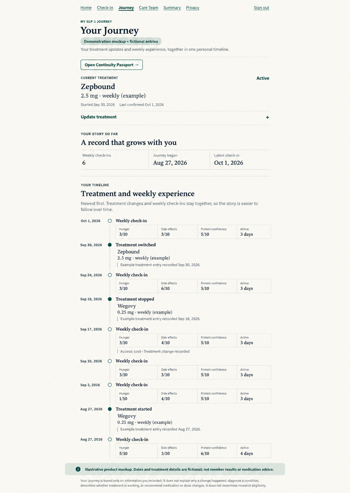

Record how the week felt.
Record hunger, side effects, nutrition confidence and activity, with space for other information you choose to share.
Compare weekly check-ins and record treatment starts, stops and switches in one personal timeline. Each check-in adds perspective—and a clearer record to bring to your next appointment.
For adults already using a prescribed GLP-1 medication. Join our small, free pilot and keep working with your existing healthcare provider.
Free during the pilot. Keep your existing healthcare provider.
Begin with a baseline. With more entries, compare what changed or stayed steady in hunger difficulty, side effects, protein confidence and active days. Journey summaries describe your recorded experience—not why it changed.
Record hunger, side effects, nutrition confidence and activity, with space for other information you choose to share.
Look back at hunger, side effects, nutrition confidence and activity across your check-ins. Observations reflect what you entered; they do not explain the cause of a change.
Record starts, stops, restarts and switches alongside your weekly check-ins. Bring a clearer history to your next conversation with your prescribing provider.
Record treatment starts, stops, restarts or switches alongside your weekly experience. Revisit that history before your next conversation with your provider. Your prescribing provider guides treatment and dose decisions.

Start with your first check-in. Return each week to add to your history and review what changed or stayed steady.
This is an early product pilot. Your feedback will help us learn what is useful and what needs to improve.
This is a product pilot, not enrollment in a medication study. Optional research communications do not change your access to support.
Adults currently using a prescribed GLP-1 medication who want to try weekly check-ins and share feedback on the experience. Review the enrollment information before creating an account.
Participation in this pilot is free.
No. Continue working with your prescribing healthcare provider for treatment, medication and dose decisions.
For education and support, send a question from the final step of your weekly check-in, then read the reply in your Care Team conversation. Some check-in responses may be flagged for clinician review. This support does not include diagnosis, prescribing or medication and dose decisions. We aim to respond within 1 business day, but this is not guaranteed. Messages are not continuously monitored. Do not wait for a reply if you need urgent care.
No. Research communications are optional and separate from your Care Companion membership. A communications preference is not consent to a study or permission to share your information with a sponsor.
Read the Care Companion privacy information and the enrollment disclosures before joining.
Start with a baseline. Return to compare your entries and see your history grow. Free during the pilot; your existing healthcare provider stays in charge of treatment.
Join the free pilot